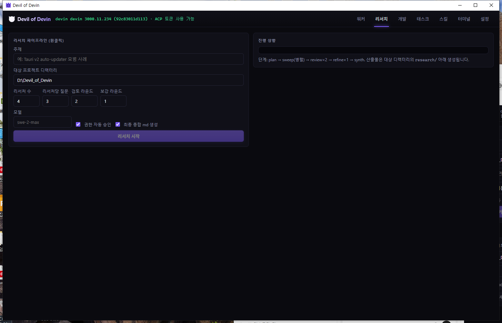
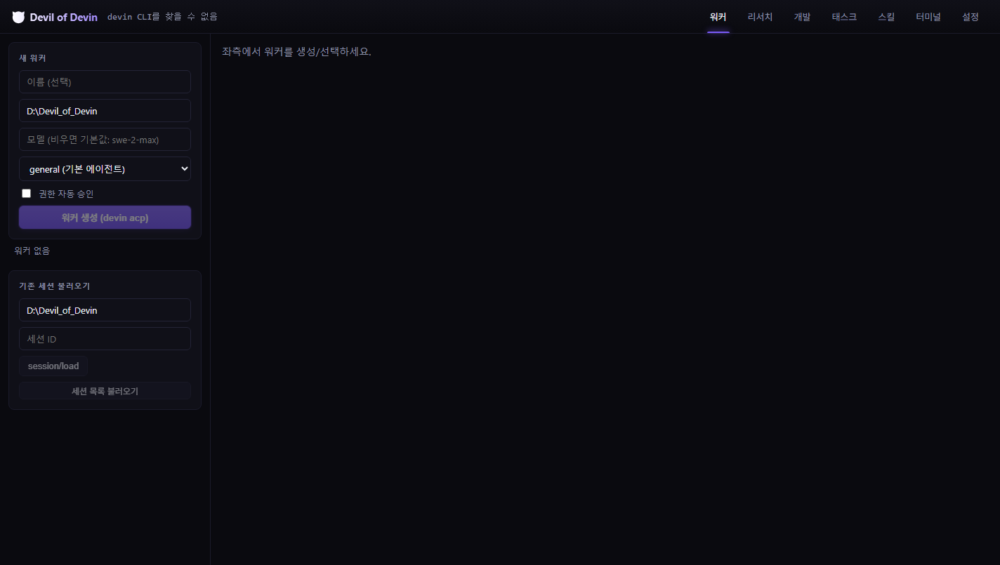
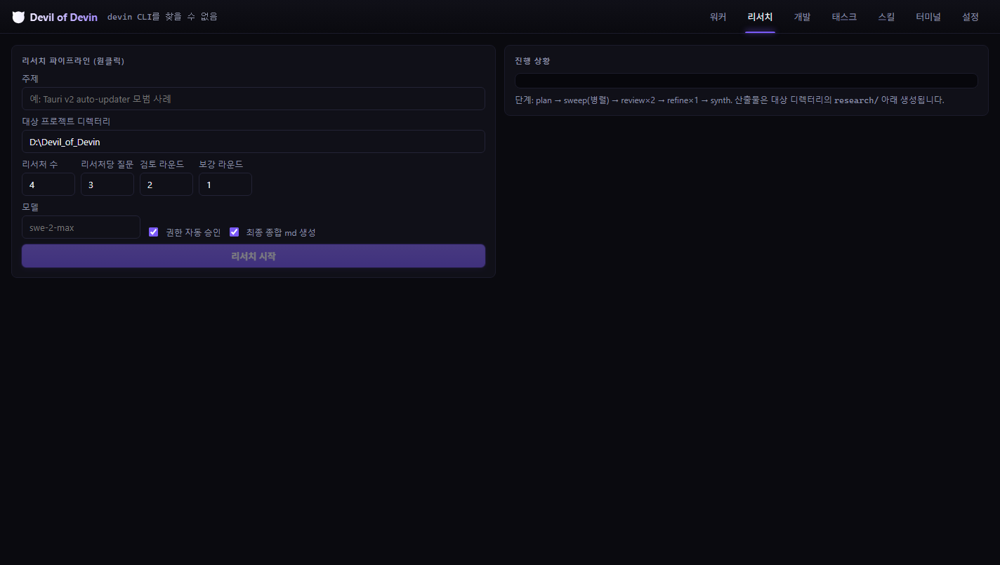
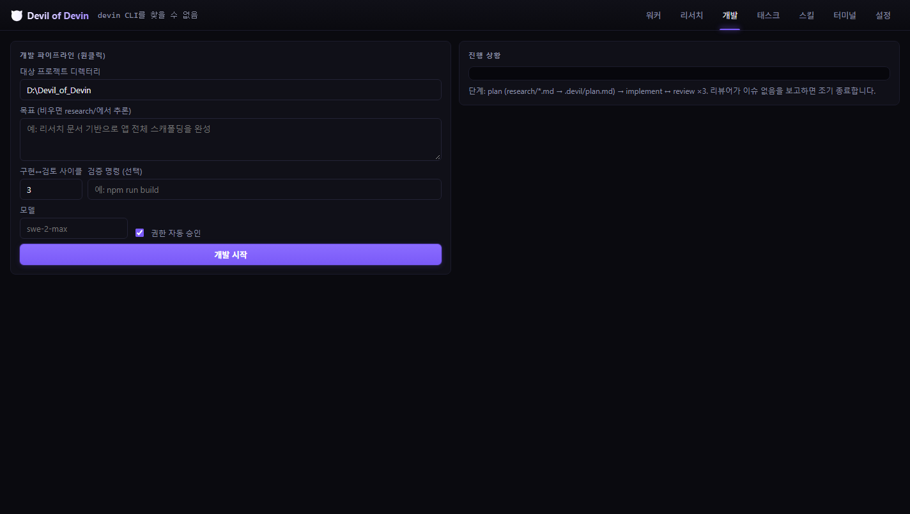
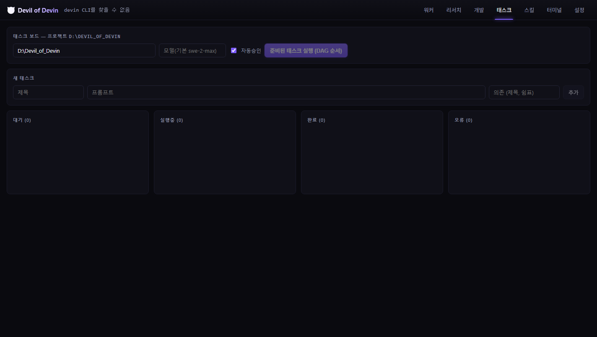
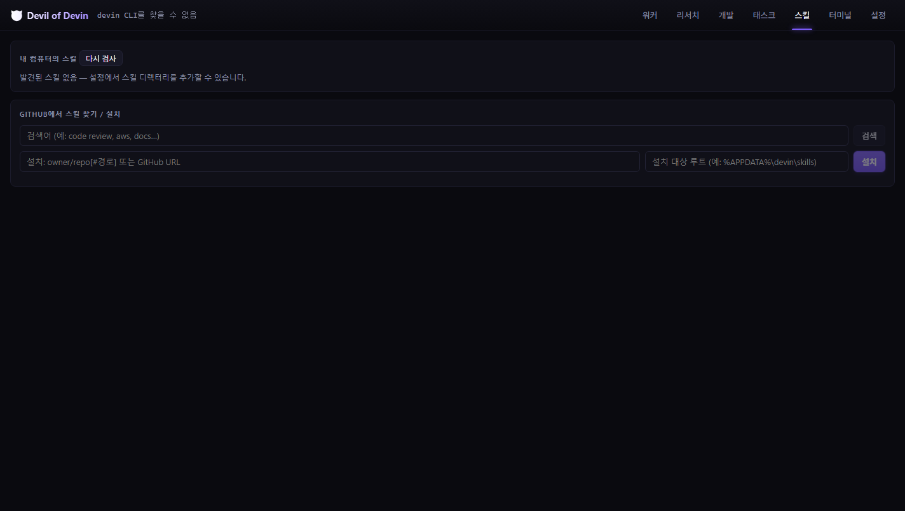
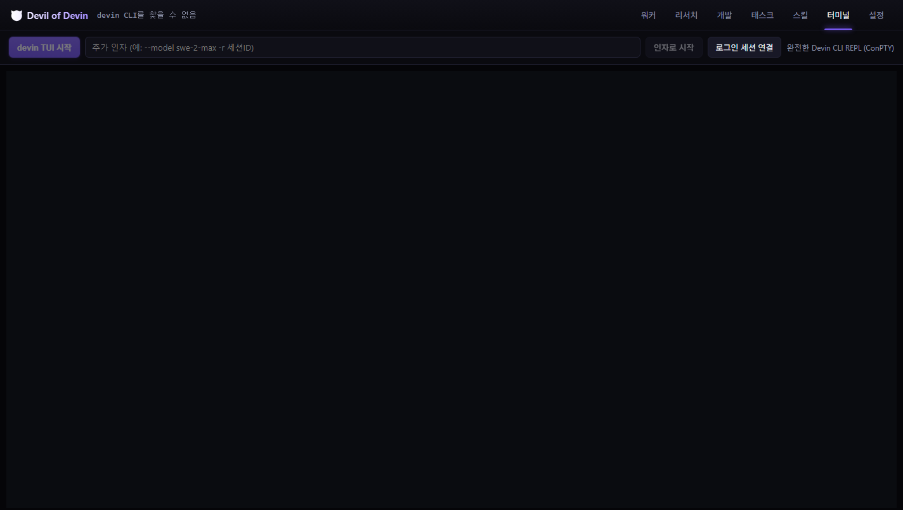
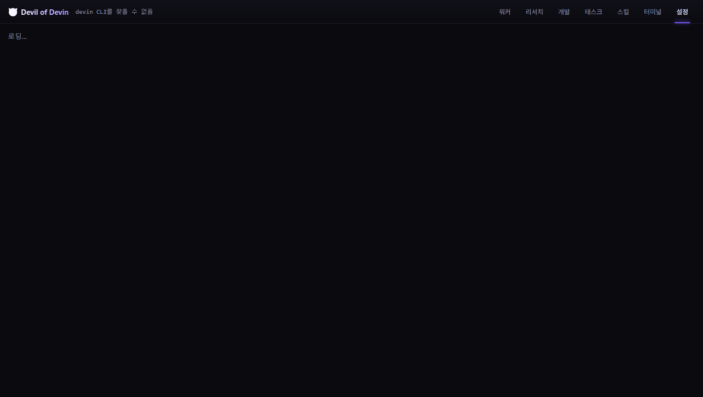

| 항목 | 방법 | 결과 | 비고 |
|---|---|---|---|
| Rust 컴파일 | cargo check | 통과 | 경고 없음 |
| 프론트엔드 빌드 | npm run build | 통과 | >500kB 청크 경고만 존재(비치명) |
| ACP initialize | 실제 devin acp 서브프로세스 | 통과 | protocolVersion 1 |
| ACP authenticate | credentials.toml 세션 토큰 → _meta.api_key | 통과 | 브라우저 로그인 불필요 |
| session/new | 인증 후 세션 생성 | 통과 | circular-scarecrow, wind-colt 등 |
| session/prompt 스트리밍 | "PONG" 프롬프트 실전 전송 | 통과 | agent_thought_chunk → agent_message_chunk → end_turn 확인 |
| 훅 서버 | GET /health, POST /hook | 통과 | localhost 바인드만 사용 |
| 훅 명령 실행 | 실제 세션에서 UserPromptSubmit 발화 | 통과 | bash 안전 문법으로 수정 후 프롬프트 차단 해소 |
| UI 렌더링 | 실제 Tauri 창 캡처 + headless 탭 전환 | 통과 | 7개 탭 전부 정상 표시 |
| 한국어 UI | 전 화면 문자열 검토 | 통과 | 잔존 중국어 문자열 제거 완료 |
>nul, exit /b 0)이었는데 Devin 훅은 Git Bash로 실행됨.
UserPromptSubmit 훅 실패가 모든 프롬프트를 차단(Prompt blocked: exit: /b: numeric argument required).
|| true 종료의 bash 명령으로 교체하고, 기존 파일의 깨진 엔트리 8개도 복구. 재주입 시 구 _devil 엔트리 정리.devin auth status가 "Not logged in"이라도 credentials.toml의 devin-session-token은 유효.
토큰을 ACP authenticate로 직접 전달 → 세션 생성·프롬프트 전부 성공. 상단 배지 "ACP 토큰 사용 가능"으로 표시.devin auth login은 대화형 TUI — ConPTY로 실행하고 커서위치 쿼리(ESC[6n)에 자동 응답, Enter로 브라우저 로그인 선택.
로그인 URL 감지 시 "브라우저로 열기" 버튼 표시.nul 파일(Windows 예약명) 삭제, .devin/hooks.v1.json gitignore 등록(포트가 박힌 자동생성 파일).
devin 3000.11.234 · ACP 토큰 사용 가능 배지 확인.






워커 탭 → 워커 생성 (devin acp 자동 인증) → 왼쪽 목록에서 선택 → 하단 입력 → 전송 응답은 오른쪽 채팅 영역에 스트리밍 (생각·메시지·툴콜·플랜 구분 표시) 리서치 탭 → 원클릭 파이프라인: plan → 병렬 sweep → review×N → refine×N → synth → research/*.md 개발 탭 → research/*.md 소비 → .devil/plan.md → 구현↔리뷰 사이클 → 완료 알림
|| true)하며, 재주입 시 자동 정리됨.tauri build)의 알림 권한/아이콘 — 배포 빌드 시 확인 필요.<대상>\research\*.md 산출물 확인